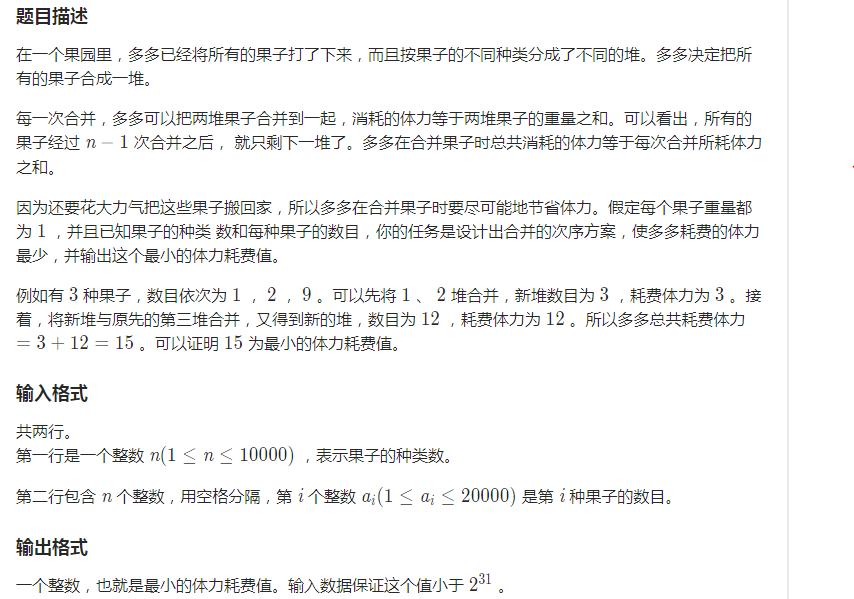
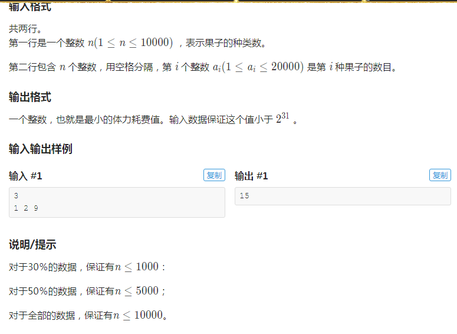

我们先来看题：


(图片来自洛谷)
题解：这是一道贪心。每次取最小两堆合并即可。 证明的话，自己画一棵"合并树"，就会很清晰了。 每一堆果子用数组记录，就能AC，用不着优化。
AC代码：
不过！！！
还有更快的。那就是 优先队列 。
优先队列，就是优先的队列，内部是由"堆"来实现。 我之前连半点数据结构都没有提到过。不过，没关系！！我接下来会更新关于这一方面的内容。
这里简单介绍一下 优先队列 。 它是个队列，你把数据存进去，C++的STL自动帮帮你排序（你可以这么理解吧）。
基本操作：
1 q.top(); 查找队列顶部。 1 q.pop(); 弹出队列首元素。 1 q.top(); 返回值为队列首元素。
细节以后我会慢慢讲。
AC代码：
1 #include <bits/stdc++.h>
2 #define N 10010
3 using namespace std;
4 int n,a,s;
5 priority_queue <int,vector<int>,greater<int> >b;
6 int main(){
7 cin>>n;
8 for(int i=1;i<=n;i++) {cin>>a; b.push(a);}
9 while(b.size()>=2){
10 int x=b.top();
11 b.pop();
12 int y=b.top();
13 b.pop();
14 s+=x+y;
15 b.push(x+y);
16 }
17 cout<<s<<endl;
18 return 0;
19 }
感谢大家的阅读。。。安利我自己的博客中。。。